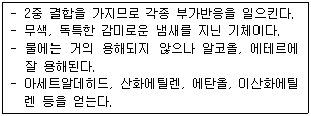

가스기능사 (2009-01-18 기출문제)
1과목: 가스안전관리
1. 아르곤(Ar)가스 충전용기의 도색은 어떤 색상으로 하여야 하는가?
- 백색
- 녹색
- 갈색
- 회색
(정답률: 78%)

2. 가스 도매사업의 가스 공급시설, 기술기준에서 배관을 지상에 설치할 경우 원칙적으로 배관에 도색해야 하는 색상은?
- 흑색
- 황색
- 적색
- 회색
(정답률: 79%)
3. 충전용기를 차량에 적재하여 운반하는 도중에 주차하고자 할 때 주의사항으로 옳지 않은 것은?
- 충전용기를 싣거나 내릴 때를 제외하고는 제1종 보호시설의 부근 및 제2종 보호시설이 밀집된 지역을 피한다.
- 주차 시는 엔진을 정지시킨 후 주차제동장치를 걸어 놓는다.
- 주차를 하고자 하는 주의의 교통상황, 지형조건, 화기 등을 고려하여 안전한 장소를 택하여 주차한다.
- 주차 시에는 긴급한 사태를 대비하여 바퀴 고정목을 사용하지 않는다.
(정답률: 92%)
4. 가스폭발에 대한 설명 중 틀린 것은?
- 폭발범위가 넓은 것은 위험하다.
- 가스의 비중이 큰 것은 낮은 곳에 체류할 위험이 있다.
- 안전간격이 큰 것일수록 위험하다.
- 폭굉은 화염 전파속도가 음속보다 크다.
(정답률: 81%)
5. 방안에서 가스난로를 사용하다가 사망한 사고가 발생 하였다. 다음 중 사고의 주된 원인은?
- 온도 상승에 의한 질식
- 산소 부족에 의한 질식
- 탄산가스에 의한 질식
- 질소와 탄산가스에 의한 질식
(정답률: 79%)
6. 배관 표지판은 배관이 설치되어 있는 경로에 따라 배관 위치를 정확히 알 수 있도록 설치하여야 한다. 지상에 설치된 배관은 표지판을 몇 m 이하의 간격으로 설치하여야 하는가?(오류 신고가 접수된 문제입니다. 반드시 정답과 해설을 확인하시기 바랍니다.)
- 100
- 300
- 500
- 1,000
(정답률: 37%)
7. 국내 일반가정에 공급되는 도시가스(LNG)의 발열량은 약 몇 kcal/m3인가? (단, 도시가스 월 사용예정량의 산정기준에 따른다.)
- 9,000
- 10,000
- 11,000
- 12,000
(정답률: 73%)
8. 일산화탄소와 공기의 혼합가스 폭발범위는 고압일수록 어떻게 변하는가?
- 넓어진다.
- 변하지 않는다.
- 좁아진다.
- 일정치 않다.
(정답률: 73%)
9. 도시가스가 안전하게 공급되어 사용되기 위한 조건으로 옳지 않은 것은?
- 공급하는 가스에 공기 중의 혼합비율의 용량이 1/1,000상태에서 감지할 수 있는 냄새가 나는 물질을 첨가해야 한다.
- 정압기 출구에서 측정한 가스압력은 1.5kpa 이상 2.5kpa 이내를 유지해야 한다.
- 웨버지수는 표준웨버 지수의 ±4.5% 이내를 유지해야 한다.
- 도시가스 중 유해성분은 건조한 도시가스 1m3당 황전량은 0.5g 이하를 유지해야 한다.
(정답률: 60%)
10. 가연성가스의 제조설비 중 전기설비를 방폭성능을 가지는 구조로 갖추지 아니하여도 되는 가스는?
- 암모니아
- 염화메탄
- 아크릴알데히드
- 산화에틸렌
(정답률: 75%)
11. 고압가스의 분출에 대하여 정전기가 가장 발생되기 쉬운 경우는?
- 가스가 충분히 건조되어 있을 경우
- 가스 속에 고체의 미립자가 있을 경우
- 가스 분자량이 작은 경우
- 가스 비중이 큰 경우
(정답률: 71%)
12. 고압가스의 제조장치에서 누출되고 있는 것을 그 냄새로 알 수 있는 가스는?
- 일산화탄소
- 이산화탄소
- 염소
- 아르곤
(정답률: 76%)
13. 긴급용 밴트스택 방출구의 위치는 작업원이 정상 작업을 하는데 필요한 장소 및 작업원이 항상 통행하는 장소로 부터 몇 m 이상 떨어진 곳에 설치하여야 하는가?
- 5
- 7
- 10
- 15
(정답률: 68%)
14. 용기내부에서 가연성가스의 폭발이 발생할 경우 그 용기가 폭발 압력에 견디고 접합면, 개구부 등을 통하여 외부의 가연성가스에 인화되지 아니하도록 한 방폭구조는?
- 내압방폭구조
- 압력방폭구조
- 유입방폭구조
- 안전증 방폭구조
(정답률: 73%)
15. 도시가스 매설 배관의 보호판은 누출가스가 지면으로 확산되도록 구멍을 뚫는데 그 간격의 기준으로 옳은 것은?
- 1m 이하의 간격
- 2m 이하의 간격
- 3m 이하의 간격
- 5m 이하의 간격
(정답률: 61%)
16. LP가스 충전설비의 작동 상황을 점검 주기로 옳은 것은?
- 1일 1회 이상
- 1주일에 1회 이상
- 1월 1회 이상
- 1년 1회 이상
(정답률: 84%)
17. 긴급차단장치의 조작 동력원이 아닌 것은?
- 액압
- 기압
- 전기
- 차압
(정답률: 56%)
18. 액화염소가스 1,375kg을 용량 50ℓ인 용기에 충전하려면 몇 개의 용기가 필요한가? (단, 액화염소가스의 정수[C]는 0.8이다.)
- 20
- 22
- 25
- 27
(정답률: 71%)
19. 도시가스 사용시설의 노출배관에 의무적으로 표시하여야 하는 사항이 아닌 것은?
- 최고사용압력
- 가스 흐름방향
- 사용가스명
- 공급자명
(정답률: 82%)
20. 다음 중 고압가스 운반기준 위반사항은?
- LPG와 산소를 동일차량에 그 충전용기의 밸브가 서로 마주보지 않도록 적재하였다.
- 운반 중 충전용기를 40℃ 이하로 유지하였다.
- 비독성 압축가연성가스 500m3를 운반 시 운반책임자를 동승시키지 않고 운반하였다.
- 200km 이상의 거리를 운행하는 경우에 중간에 충분한 휴식을 취하였다.
(정답률: 82%)
21. 독성가스의 충전용기를 차량에 적재하여 운반 시 그 차량의 앞뒤 보기 쉬운 곳에 반드시 표시해야 할 사항이 아닌 것은?
- 위험 고압가스
- 독성가스
- 위험을 알리는 도형
- 제조회사
(정답률: 77%)
22. 다음 중 고압가스 처리설비로 볼 수 없는 것은?
- 저장탱크에 부속된 펌프
- 저장탱크에 부속된 안전밸브
- 저장탱크에 부속된 압축기
- 저장탱크에 부속된 기화장치
(정답률: 55%)
23. 도시가스 배관의 관경이 25㎜인 것은 몇 m마다 고정 하여야 하는가?
- 1
- 2
- 3
- 4
(정답률: 76%)
24. 가스보일러 설치기준에 따라 반드시 내열실리콘으로 마감 조치하여 기밀이 유지 하도록 하여야 하는 부분은?
- 배기통과 가스보일러의 접속부
- 배기통과 배기통의 접속부
- 급기통과 배기통의 접속부
- 가스보일러와 급기통의 접속부
(정답률: 63%)
25. 고압가스 저장능력 산정기준에서 액화가스의 저장탱크 저장능력을 구하는 식은? (단, Q, W는 저장능력, P는 최고충전압력, V는 내용적, C는 가스 종류에 따른 정수, d는 가스의 비중이다.)
- Q = (10P＋1)V
- Q = 10PV
- W =V/C
- W = 0.9dV
(정답률: 69%)
26. 다음 중 2중 배관으로 하지 않아도 되는 가스는?
- 일산화탄소
- 시안화수소
- 염소
- 포스겐
(정답률: 64%)
27. 도시가스 본관 중 중압 배관의 내용적이 9m3일 경우, 자기압력기록계를 이용한 기밀시험 유지시간은?
- 24분 이상
- 40분 이상
- 216분 이상
- 240분 이상
(정답률: 46%)
28. 가스의 경우 폭굉(Detonation)의 연소속도는 약 몇 m/s정도인가?
- 0.03~10
- 10~50
- 100~600
- 1,000~3,000
(정답률: 85%)
29. 수소의 폭발한계는 4~75%이다. 수소의 위험도는 약 얼마인가?
- 0.9
- 17.75
- 18.7
- 19.75
(정답률: 74%)
30. 다음 가스폭발의 위험성 평가기법 중 정량적 평가방법은?
- HAZOP(위험성운전 분석기법)
- FTA(결함수 분석기법)
- Check List법
- WHAT-IF(사고예상질문 분석기법)
(정답률: 70%)
2과목: 가스장치 및 기기
31. 왕복펌프에 사용하는 밸브 중 점성액이나 고형물이 들어 있는 액에 적합한 밸브는?
- 원판밸브
- 윤형밸브
- 플래트 밸브
- 구밸브
(정답률: 55%)
32. 가스액화분리장치의 축냉기에 사용되는 축냉체는?
- 규조토
- 자갈
- 암모니아
- 희가스
(정답률: 43%)
33. 주로 탄광 내에서 CH4의 발생을 검출하는데 사용되며 청염(푸른 불꽃)의 길이로써 그 농도를 알 수 있는 가스검지기는?
- 안전등형
- 간섭계형
- 열선형
- 흡광 광도법
(정답률: 74%)
34. 압력계의 측정방법에는 탄성을 이용하는 것과 전기적 변화를 이용하는 방법 등이 있다. 다음 중 전기적 변화를 이용하는 압력계는?
- 부돈관식 압력계
- 벨로우즈 압력계
- 스트레인 게이지
- 다이아프램 압력계
(정답률: 65%)
35. 다음 중 비접촉식 온도계에 해당하지 않는 것은?
- 광전관 온도계
- 색 온도계
- 방사 온도계
- 압력식 온도계
(정답률: 60%)
36. 다음 중 저온 단열법이 아닌 것은?
- 분말섬유 단열법
- 고진공 단열법
- 다층진공 단열법
- 분말진공 단열법
(정답률: 54%)
37. 20RT의 냉동능력을 갖는 냉동기에서 응축온도가 -25℃일 때 냉동기를 운전하는데 필요한 냉동기의 성적계수(COP)는 약 얼마인가?
- 4.5
- 7.5
- 14.5
- 17.5
(정답률: 22%)
38. 언로딩형과 로딩형이 있으며 대용량이 요구되고, 유량제어 범위가 넓은 경우에 적합한 정압기는?
- 피셔식 정압기
- 레이놀드식 정압기
- 파일럿식 정압기
- 엑셜플로식 정압기
(정답률: 41%)
39. 나사압축기(Screw compressor)의 특징에 대한 설명으로 틀린 것은?
- 흡입, 압축, 토출의 3행정으로 이루어져 있다.
- 기체에는 맥동이 없고 연속적으로 송출한다.
- 토출압력의 변화에 의한 용량변화가 크다.
- 소음방지 장치가 필요하다.
(정답률: 51%)
40. 유속이 일정한 장소에서 전압과 정압의 차이를 측정하여 속도수두에 따른 유속을 측정하는 형식의 유량계는?
- 피토관식 유량계
- 열선식 유량계
- 전자식 유량계
- 초음파식 유량계
(정답률: 65%)
41. 요오드화 칼륨지(KI전분지)를 이용하여 어떤 가스의 누출여부를 검지한 결과 시험지가 청색으로 변하였다. 이 때 누출된 가스의 명칭은?
- 시안화수소
- 아황산가스
- 황화수소
- 염소
(정답률: 49%)
42. 2종 금속의 양끝의 온도차에 따른 열기전력을 이용하여 온도를 측정하는 온도계는?
- 베크만 온도계
- 바이메탈식 온도계
- 열전대 온도계
- 전기저항 온도계
(정답률: 77%)
43. 액화산소 등과 같은 극저온 저장탱크의 액면 측정에 주로 사용되는 액면계는?
- 햄프슨식 액면계
- 슬립 튜브식 액면계
- 크랭크식 액면계
- 마그네틱식 액면계
(정답률: 72%)
44. 적외선식 흡광방식으로 차량에 탑재하여 메탄의 누출 여부를 탐지하는 것은?
- FID(Flame Ionization Detector)
- OMD(Optical Methane Detector)
- ECD(Electron Capture Detector)
- TCD(Thermal Conductivity Detector)
(정답률: 63%)
45. 가스용 금속플렉스블 호스에 대한 설명으로 틀린 것은?
- 이음쇠는 플레어(flare) 또는 유니온(union)의 접속 기능이 있어야 한다.
- 호스의 최대 길이는 10,000mm 이내로 한다.
- 호스길이의 허용오차는 ＋3%, -2% 이내로 한다.
- 튜브는 금속제로서 주름가공으로 제작하여 쉽게 굽혀 질 수 있는 구조로 한다.
(정답률: 52%)
3과목: 가스일반
46. 다음 보기의 성질을 갖는 기체는?

- 아세틸렌
- 프로판
- 에틸렌
- 프로필렌
(정답률: 61%)
47. 다음 중 수분이 존재하였을 때 일반 강재를 부식시키는 가스는?
- 일산화탄소
- 수소
- 황화수소
- 질소
(정답률: 76%)
48. 산소(O2)에 대한 설명 중 틀린 것은?
- 무색, 무취의 기체이며 물에 약간 녹는다.
- 가연성가스이나 그 자신은 연소하지 않는다.
- 용기의 도색은 일반 공업용이 녹색, 의료용이 백색이다.
- 저장용기는 무계목 용기를 사용한다.
(정답률: 80%)
49. 수소의 성질에 대한 설명 중 틀린 것은?
- 무색, 무미, 무치의 가연성 기체이다.
- 가스 중 최소의 밀도를 가진다.
- 열전도율이 작다.
- 높은 온도일 때에는 강재, 기타 금속재료라도 쉽게 투과한다.
(정답률: 80%)
50. 가스의 비열비 값은?
- 언제나 1보다 작다.
- 언제나 1보다 크다.
- 1보다 크기도 하고 작기도 하다.
- 0.5와 1사이의 값이다.
(정답률: 72%)
51. 다음 중 독성가스에 해당되는 것은?
- 에틸렌
- 탄산가스
- 시클로프로판
- 산화에틸렌
(정답률: 69%)
52. 다음 중 가스크로마토그래피의 캐리어가스로 사용되는 것은?
- 헬륨
- 산소
- 불소
- 염소
(정답률: 63%)
53. 다음 압력이 가장 큰 것은?
- 1.01Mpa
- 5atm
- 100inHg
- 88psi
(정답률: 43%)
54. LPG(액화석유가스)의 일반적인 특징에 대한 설명으로 틀린 것은?
- 저장탱크 또는 용기를 통해 공급된다.
- 발열량이 크고 열효율이 높다.
- 가스는 공기보다 무거우나 액체는 물보다 가볍다.
- 물에 녹지 않으며, 연소 시 메탄에 비해 공기량이 적게 소요된다.
(정답률: 57%)
55. 기준물질의 밀도에 대한 측정물질의 밀도의 비를 무엇이라고 하는가?
- 비중량
- 비용
- 비중
- 비체적
(정답률: 75%)
56. 탄소 2kg을 완전 연소시켰을 때 발생되는 연소가스는 약 몇 kg인가?
- 3.67
- 7.33
- 5.87
- 8.89
(정답률: 42%)
57. 섭씨 -40℃는 화씨온도로 약 몇 ℉인가?
- 32
- 45
- 273
- -40
(정답률: 70%)
58. 프로판(C3H8) 1m3을 완전 연소시킬 때 필요한 이론산소량은 몇 m3인가?
- 5
- 10
- 15
- 20
(정답률: 50%)
59. 다음 중 SI기본단위가 아닌 것은?
- 질량 : 킬로그램(kg)
- 주파수 : 헤르츠(Hz)
- 온도 : 켈빈(k)
- 물질량 : 몰(mole)
(정답률: 47%)
60. 다음 중 “제 2종 영구기관은 존재할 수 없다. 제 2종 영구기관은 존재 가능성을 부인한다.“ 라고 표현되는 법칙은?
- 열역학 제0법칙
- 열역학 제1법칙
- 열역학 제2법칙
- 열역학 제3법칙
(정답률: 65%)